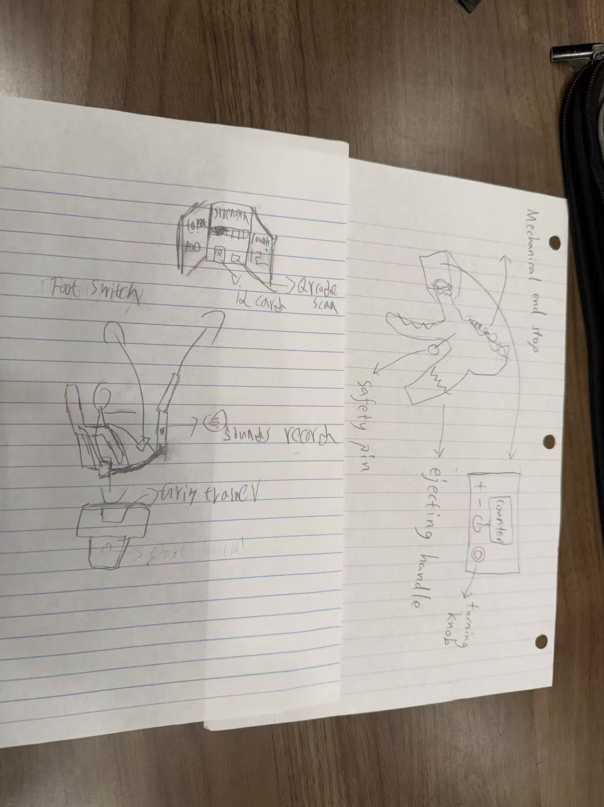
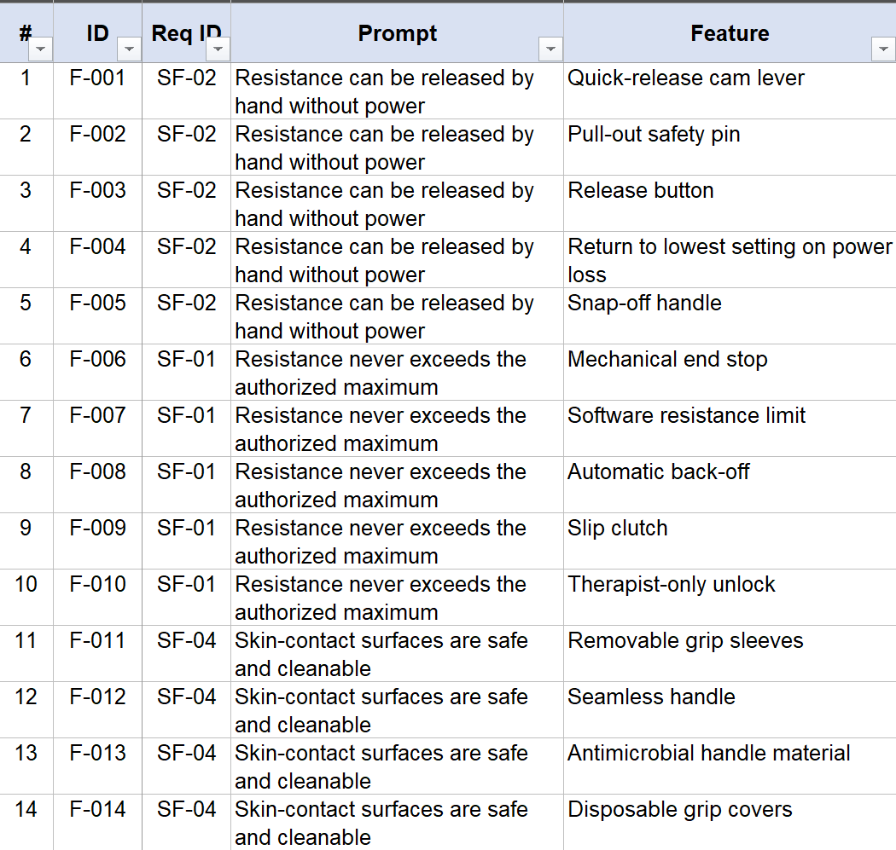

Ideation and Concept Generation
1. Product Goal and Audience
Our product is a hand-rehabilitation grip trainer whose resistance is set by a therapist's prescription rather than by the patient. It senses how hard the hand is squeezing and adjusts its mechanism so that each exercise is performed at the intended load. We are designing it for two groups: therapists in physical and occupational therapy, who decide the training plan and check the results, and the patients they treat, who follow that plan at home without supervision. The sections below records how the team moved from those needs to a total of about 100 ideas and then to three alternative product concepts.
2. Prioritization of Needs and Requirements
Brainstorming on every requirement with equal effort would mean 100 features over 32 prompts, so the team first decided which requirements deserved the most weights and attention. We reused the importance ratings from our User Needs and Benchmarking work: a requirement took the average rating of the need category listed in its Source column, and a requirement citing two categories took the larger of the two. Two kinds of requirements were then removed from the list. Those that describe paperwork or a process, such as keeping a risk file, offer nothing to brainstorm, and pairs whose solutions would be the same, such as the two resistance-limit requirements, were combined into one prompt. That left the 20 prompts in Table 1, and asking for five features on each gave the target of 100.
Table 1. Requirements selected as brainstorm prompts, in priority order.
| # | Req ID | Prompt (short) | Weight | Owner |
|---|---|---|---|---|
| 1 | SW-01 | Resistance follows the prescription automatically | 4.33 | Gabriel |
| 2 | SF-01 | Resistance never exceeds the authorized maximum | 4.33 | Zice |
| 3 | CU-01 | Therapist sets resistance and repetition target | 4.33 | Duotao |
| 4 | CU-03 | Resistance adapts to measured performance | 4.33 | Duotao |
| 5 | HW-01 | Grip span fits 5th–95th percentile hands | 4.14 | Gabriel |
| 6 | UX-01 | Session starts in ≤ 3 operations | 4.14 | Duotao |
| 7 | UX-03 | Resistance and repetition progress are visible | 4.14 | Duotao |
| 8 | UX-04 | Operable with weak or stiff hands | 4.14 | Duotao |
| 9 | UX-05 | Patient is notified when the target is reached | 4.14 | Duotao |
| 10 | SF-04 | Skin-contact surfaces are safe and cleanable | 4.09 | Zice |
| 11 | SF-02 | Resistance can be released by hand without power | 4.07 | Zice |
| 12 | HW-05 | Moving parts cannot pinch the user | 4.07 | Gabriel |
| 13 | HW-03 | Carried in one hand, no installation | 3.83 | Gabriel |
| 14 | MF-05 | Unit cost supports individual ownership | 3.83 | Gabriel |
| 15 | SW-06 | Grip force is measured accurately | 3.74 | Zice |
| 16 | SW-04 | Repetitions are counted automatically | 3.74 | Zice |
| 17 | MF-03 | Force sensing calibrates with known loads | 3.74 | Zice |
| 18 | MF-02 | Sensing and motor signals can be probed | 3.74 | Zice |
| 19 | SW-03 | Session data survives power loss | 3.74 | Gabriel |
| 20 | SW-05 | Records export without custom software | 3.74 | Gabriel |
3. Initial Capture of Design Features
Tables 2 to 4 are the raw output of the brainstorm, recorded in the order the ideas were offered. At this point the team was only collecting: nothing was judged, edited or discarded, and ideas that seemed impractical were written down with the same care as conventional ones, since an unusual idea can become the starting point of a different concept later.
3.1 Sensing, Measurement and Safety (Zice)
| ID | Req ID | Feature | Detail |
|---|---|---|---|
| F-001 | SF-02 | Quick-release cam lever | Flipping a lever on the side lets the spring go slack, so the resistance drops right away |
| F-002 | SF-02 | Pull-out safety pin | Pulling a pin out of the handle disconnects the spring, so the handles open freely |
| F-003 | SF-02 | Release button | Pressing a large button separates the motor from the spring, so the handle can be opened by hand |
| F-004 | SF-02 | Return to lowest setting on power loss | If the power goes out, the mechanism moves back to its easiest setting on its own |
| F-005 | SF-02 | Snap-off handle | A firm pull pops the grip handle off the body, freeing the hand immediately |
| F-006 | SF-01 | Mechanical end stop | A physical stop inside the housing keeps the spring from being tightened past the prescribed limit |
| F-007 | SF-01 | Software resistance limit | The controller refuses any setting above the maximum the therapist entered |
| F-008 | SF-01 | Automatic back-off | If the squeeze force goes over the limit, the motor eases the resistance off on its own |
| F-009 | SF-01 | Slip clutch | A clutch slips when the load gets too high, so the extra force never reaches the hand |
| F-010 | SF-01 | Therapist-only unlock | Raising the maximum needs the therapist's code, so the patient can only choose lower settings |
| F-011 | SF-04 | Removable grip sleeves | Soft sleeves slide off the handles so they can be washed or replaced for each patient |
| F-012 | SF-04 | Seamless handle | The handle has no gaps or seams, so it can be wiped clean with disinfectant |
| F-013 | SF-04 | Antimicrobial handle material | The handle is made from a plastic that resists germ growth |
| F-014 | SF-04 | Disposable grip covers | Single-use covers slip over the handles and are thrown away between patients |
| F-015 | SF-04 | UV cleaning case | The storage case shines UV light on the handles while the device is put away |
| F-016 | SW-06 | Force sensor between the handles | A sensor placed where the two handles meet measures the squeeze force directly |
| F-017 | SW-06 | Spring compression reading | The device measures how far the spring is squeezed and turns that distance into a force |
| F-018 | SW-06 | Air-filled squeeze bulb | The patient squeezes a sealed bulb, and the air pressure inside is turned into a force reading |
| F-019 | SW-06 | Motor effort estimate | Force is estimated from how hard the motor has to work to hold the handle in place |
| F-020 | SW-06 | Per-finger pressure pads | Thin pads under each finger report how hard each finger presses, as well as the total |
| F-021 | SW-04 | Force threshold counting | A repetition is counted each time the squeeze force rises above a set level and falls back |
| F-022 | SW-04 | Closed-handle switch | A switch clicks each time the handle is squeezed fully closed |
| F-023 | SW-04 | Motion sensor | A motion sensor in the handle recognizes the squeeze-and-release pattern |
| F-024 | SW-04 | Light-beam sensor | A light beam across the handle gap is broken each time the hand closes |
| F-025 | SW-04 | Phone camera counting | A phone app watches the hand through the camera and counts each squeeze |
| F-026 | MF-03 | Calibration weight hook | A hook lets a standard weight hang from the handle so the reading can be checked |
| F-027 | MF-03 | Guided calibration mode | A menu mode walks the technician through an empty step and a known-weight step |
| F-028 | MF-03 | Reference spring check | A spring of known stiffness is squeezed and the reading is compared with the force it should give |
| F-029 | MF-03 | Calibration dock | A dock presses the handle with a known force and corrects the reading automatically |
| F-030 | MF-03 | Automatic zero at startup | The reading resets to zero each time the device turns on with no one holding it |
| F-031 | MF-02 | Labeled test points | Marked metal pads on the circuit board where a meter probe can be clipped on |
| F-032 | MF-02 | Removable service cover | A panel unscrews to reach the circuit board without taking the whole device apart |
| F-033 | MF-02 | External test connector | One plug on the outside brings out the key signals for testing |
| F-034 | MF-02 | Live readings to a computer | The device sends its readings to a computer over a cable while it runs |
| F-035 | MF-02 | Status lights | Small lights show whether the sensor and motor are working, visible without any tools |
3.2 Actuation, Mechanics and Data (Gabriel)
| ID | Req ID | Feature | Detail |
|---|---|---|---|
| F-036 | SW-01 | Motor-driven spring preload | A gear motor turns a lead screw that compresses the return spring, so resistance changes with spring preload |
| F-037 | SW-01 | Magnetorheological brake | A fluid brake whose resistance changes with coil current, giving smooth resistance with no moving preload mechanism |
| F-038 | SW-01 | Motor-adjusted elastic tension | A motor changes the stretch of an elastic resistance element automatically to match the therapist's prescribed resistance |
| F-039 | SW-01 | Servo-positioned resistance lever | A servo moves the attachment point of the resistance mechanism to automatically increase or decrease mechanical resistance |
| F-040 | SW-01 | Electromagnetic resistance system | An electromagnet changes opposing force electronically so the controller can automatically apply the prescribed resistance level |
| F-041 | HW-01 | Sliding adjustable handle | One grip slides along a guided track so the distance between handles can be adjusted for different hand sizes |
| F-042 | HW-01 | Multi-position locking grip | The handle locks into several predefined positions covering a range of hand sizes |
| F-043 | HW-01 | Threaded grip-span adjustment | A screw mechanism moves the handle inward or outward to provide fine adjustment of grip span |
| F-044 | HW-01 | Interchangeable grip inserts | Different-sized grip inserts change the effective handle size to accommodate different users |
| F-045 | HW-01 | Self-adjusting grip | A spring-loaded sliding grip automatically conforms to the user's hand span within its allowable range |
| F-046 | HW-05 | Enclosed moving mechanism | A protective housing surrounds gears, springs and linkages so fingers cannot reach moving components |
| F-047 | HW-05 | Flexible joint guards | Flexible covers close gaps around moving joints while still allowing the mechanism to move |
| F-048 | HW-05 | Minimum-gap mechanical stops | Mechanical stops prevent moving surfaces from closing far enough to create a finger pinch point |
| F-049 | HW-05 | Internal linkage system | Linkages and pivot points are placed inside the housing rather than near the user's hand |
| F-050 | HW-05 | Pinch-detection cutoff | A sensor detects unexpected resistance near a moving mechanism and immediately stops its motion |
| F-051 | HW-03 | Integrated carrying handle | A handle built into the housing allows the entire device to be carried comfortably with one hand |
| F-052 | HW-03 | Compact tabletop enclosure | All mechanical and electronic components fit inside one compact housing that can be placed directly on a table |
| F-053 | HW-03 | Rechargeable battery power | An internal rechargeable battery allows operation without requiring a permanent power connection |
| F-054 | HW-03 | Foldable grip assembly | The grip mechanism folds into the housing to reduce the device's size during transportation |
| F-055 | HW-03 | Non-slip freestanding base | Rubber feet stabilize the device during use without clamps, screws or permanent installation |
| F-056 | MF-05 | Injection-moldable housing | The enclosure uses simple molded plastic parts suitable for inexpensive high-volume manufacturing |
| F-057 | MF-05 | Standard off-the-shelf motor | A commonly available motor reduces cost compared with a custom actuator |
| F-058 | MF-05 | Single-controller architecture | One microcontroller handles sensing, control and data functions to reduce electronic component count |
| F-059 | MF-05 | Shared mechanical components | Identical fasteners, bearings and other repeated components reduce the number of unique parts required |
| F-060 | MF-05 | Modular optional features | The base device includes essential rehabilitation functions while more expensive capabilities can be added as optional modules |
| F-061 | SW-03 | EEPROM session storage | Session results are saved to nonvolatile EEPROM so they remain available after power is removed |
| F-062 | SW-03 | MicroSD data storage | Each completed session is written to a removable microSD card that retains information without power |
| F-063 | SW-03 | Flash memory autosave | The controller automatically saves session progress to internal flash memory during training |
| F-064 | SW-03 | Backup capacitor save | Stored electrical energy gives the controller enough time to save the active session when power is suddenly lost |
| F-065 | SW-03 | Incremental session logging | Exercise results are saved after each repetition instead of waiting until the entire session is completed |
| F-066 | SW-05 | USB CSV export | Connecting the device by USB provides session records as standard CSV files readable by common spreadsheet programs |
| F-067 | SW-05 | Removable microSD export | Session files are stored on a microSD card that can be inserted directly into a computer |
| F-068 | SW-05 | USB mass-storage mode | The device appears as a standard flash drive when connected to a computer so records can be copied directly |
| F-069 | SW-05 | QR-code session export | The display generates a QR code containing a session summary that can be scanned with a phone |
| F-070 | SW-05 | Bluetooth standard-file transfer | The device transfers standard session files to a phone or computer using Bluetooth without requiring custom desktop software |
3.3 Interaction, Feedback and Prescription (Duotao)
| ID | Req ID | Feature | Detail |
|---|---|---|---|
| F-071 | UX-01 | Single start button | Press a large button and you can continue the training as prescribed last time. |
| F-072 | UX-01 | Patient ID card tap | After swiping the NFC card, the device automatically loads the patient's file and training prescription. |
| F-073 | UX-01 | Qr coded patient card | Scan the QR code on the card to load the patient's training plan. |
| F-074 | UX-01 | Paired mobile phone recognition | The device recognizes the paired mobile phone, and the patient can start training with one click. |
| F-075 | UX-01 | Magnetic profile token | Insert the exclusive identification plate, select the patient file, and then press the Start button. |
| F-076 | CU-01 | Password-protected therapist menu | After the therapist enters the password, they set the resistance and target number of repetitions for the designated patient. |
| F-077 | CU-01 | USB prescription editor | The therapist connects the device to the computer to save the resistance and the target number of repetitions. |
| F-078 | CU-01 | Therapist configuration Card | The authenticated NFC card transmits the parameters set by the therapist to the device. |
| F-079 | CU-01 | Detachable setting keyboard | The therapist connects the keyboard to input the parameters. After setting them up, the keyboard is removed. |
| F-080 | CU-01 | A key-controlled knob | The therapist unlocks the knob with a key and then adjusts the resistance and the target number of repetitions. |
| F-081 | CU-03 | Peak grip strength threshold rule | If the measured peak grip strength differs from the set value by more than 10%, the equipment should be adjusted within the range specified by the therapist in the next training session. |
| F-082 | CU-03 | Two-direction progression | When the grip strength is too high or too low, increase or decrease the resistance as prescribed in the next training session. |
| F-083 | CU-03 | Patient-exclusive advanced table | Therapists preset different resistance adjustment magnitudes for different rehabilitation stages. |
| F-084 | CU-03 | Adjust according to the training trend | Refer to the recent training results of the equipment to select a more stable adjustment range for the next training. |
| F-085 | CU-03 | Pre-approved advanced rules | The therapist pre-approves the adjustment rules. When the measured grip strength meets the conditions, the device will automatically execute. |
| F-086 | UX-03 | Three-field OLED dashboard | The screen is divided into three columns, simultaneously displaying resistance, completed times and target times. |
| F-087 | UX-03 | Segmented LCD panel | Three fixed number areas make the three items of data in training always visible. |
| F-088 | UX-03 | Large-print e-paper panel | Display three sets of data in large characters and high contrast, and update the number of times each action is completed |
| F-089 | UX-03 | Three independent digital displays | Three named displays each show a piece of training data. |
| F-090 | UX-03 | Color TFT information screen | The color screen delineates a fixed area and simultaneously displays three types of data. |
| F-091 | UX-04 | Large low-force key | The patient can start or pause the training by pressing the wide button with a very small force. |
| F-092 | UX-04 | Capacitive touch area | It can be operated by simply touching the larger sensing area, without the need to press hard. |
| F-093 | UX-04 | voice activation | Patients can operate by giving simple commands without pressing buttons. |
| F-094 | UX-04 | Optional foot switch | Patients can start or stop using the foot switch without having to use the hand being trained. |
| F-095 | UX-04 | Palm-operated rocker | The patient pushes the wide control keys with the palm of their hand, without having to use a single finger flexibly. |
| F-096 | UX-05 | piezoelectric buzzer | When the last action is recorded, the buzzer emits a prompt sound. |
| F-097 | UX-05 | Voice completion message | The built-in speaker tells the patient by voice that the goal has been achieved. |
| F-098 | UX-05 | Exclusive completion prompt tone | The device plays a sound different from other alarms to let the patient know that the training is complete. |
| F-099 | UX-05 | Electromechanical chime | When the target number of times is reached, the small machine's electric bell makes a sound. |
| F-100 | UX-05 | Shell sound-emitting transducer | The transducer drives the equipment housing to emit a completion prompt sound. |
4. Sorting, Ranking and Refinement
Once the board was full, the team rearranged the notes according to the job each feature does in the device. Sorting this way, instead of by author, put competing ideas for the same job next to each other, which made them easier to compare. The team then ranked the features inside each group, and talking through the rankings led to a handful of new features that joined ideas from separate groups.
4.1 Feature Groups
The 100 features were sorted into ten groups according to their function. Because several prompts ask for the same kind of function, every group combines features written for at least two different requirements, and four of the groups also combine ideas from different members. Grouping in this way let the team compare different solutions to the same job directly. Table 2 lists the groups, and the last column identifies the highest-rated feature in each group using the average ratings from Section 4.2.
Table 2. Feature groups and the top-rated feature(s) in each.
| Group | Theme | Count | Features | Top feature(s) (average) |
|---|---|---|---|---|
| G1 | Resistance generation | 6 | F-036–F-040, F-057 | F-036 Motor-driven spring preload; F-057 Standard off-the-shelf motor (5.00) |
| G2 | Safety: limiting and releasing resistance | 11 | F-001–F-010, F-050 | F-007 Software resistance limit (5.00) |
| G3 | Force sensing and calibration | 10 | F-016–F-020, F-026–F-030 | F-016 Force sensor between the handles; F-030 Automatic zero at startup (5.00) |
| G4 | Repetition counting and session records | 10 | F-021–F-025, F-061–F-065 | F-021 Force threshold counting (5.00) |
| G5 | Data export and test access | 10 | F-031–F-035, F-066–F-070 | F-031 Labeled test points; F-034 Live readings to a computer (4.50) |
| G6 | Prescription and progression | 10 | F-076–F-085 | F-081 Peak grip strength threshold rule (4.50) |
| G7 | Patient operation | 10 | F-071–F-075, F-091–F-095 | F-071 Single start button; F-091 Large low-force key (5.00) |
| G8 | Training feedback and display | 10 | F-086–F-090, F-096–F-100 | F-086 Three-field OLED dashboard; F-096 Piezoelectric buzzer (4.50) |
| G9 | Hand contact: fit and hygiene | 10 | F-011–F-015, F-041–F-045 | F-041 Sliding adjustable handle; F-042 Multi-position locking grip (4.50) |
| G10 | Enclosure, portability and cost | 13 | F-046–F-049, F-051–F-056, F-058–F-060 | F-046 Enclosed moving mechanism (5.00) |
4.2 Ranking Method and Results
The features were ranked with the same method the team used to rate the user needs. Each rater scored every one of the 100 features on a five-point scale, where 5 marks a strong candidate for the final design and 1 marks a feature not worth pursuing as the product's form. Each score weighs three considerations together: how well the feature satisfies its prompt, whether the team could realistically build it this semester with the course hardware and tools, and its cost and complexity. The two ratings for each feature were averaged, and the features were ranked by that average, with equal averages sharing a rank.
The features were rated by Zice Sun and Duotao Gao, the two members who took part in the in-person session. Gabriel could not make it to the meeting for personal reasons. The initial ratings methods, including the sheet form and formulas, were drafted with AI assistance and then reviewed and adjusted by each rater. Then, AI was used to review the result and give the summary below:
Nine features received the maximum score from both raters, and 22 reached an average of 4.5 or higher; these are listed in Table 3 and cover 16 of the 20 prompts. The highest-rated features tend to reuse hardware the device already needs, namely the grip force sensor, the motor that sets the spring preload and the main controller, so they add capability without adding parts. A single force reading, for example, supports the software resistance limit (F-007), threshold-based repetition counting (F-021) and automatic zeroing (F-030). The lowest-rated features were those that would bring in a technology used nowhere else in the device, such as the air-filled squeeze bulb (F-018), the UV cleaning case (F-015) and QR-code export (F-069).
Table 3. Features with an average rating of 4.5 or higher.
| Rank | ID | Feature | Req ID | Average |
|---|---|---|---|---|
| 1 | F-007 | Software resistance limit | SF-01 | 5.00 |
| 1 | F-016 | Force sensor between the handles | SW-06 | 5.00 |
| 1 | F-021 | Force threshold counting | SW-04 | 5.00 |
| 1 | F-030 | Automatic zero at startup | MF-03 | 5.00 |
| 1 | F-036 | Motor-driven spring preload | SW-01 | 5.00 |
| 1 | F-046 | Enclosed moving mechanism | HW-05 | 5.00 |
| 1 | F-057 | Standard off-the-shelf motor | MF-05 | 5.00 |
| 1 | F-071 | Single start button | UX-01 | 5.00 |
| 1 | F-091 | Large low-force key | UX-04 | 5.00 |
| 10 | F-001 | Quick-release cam lever | SF-02 | 4.50 |
| 10 | F-006 | Mechanical end stop | SF-01 | 4.50 |
| 10 | F-008 | Automatic back-off | SF-01 | 4.50 |
| 10 | F-010 | Therapist-only unlock | SF-01 | 4.50 |
| 10 | F-027 | Guided calibration mode | MF-03 | 4.50 |
| 10 | F-031 | Labeled test points | MF-02 | 4.50 |
| 10 | F-034 | Live readings to a computer | MF-02 | 4.50 |
| 10 | F-041 | Sliding adjustable handle | HW-01 | 4.50 |
| 10 | F-042 | Multi-position locking grip | HW-01 | 4.50 |
| 10 | F-061 | EEPROM session storage | SW-03 | 4.50 |
| 10 | F-081 | Peak grip strength threshold rule | CU-03 | 4.50 |
| 10 | F-086 | Three-field OLED dashboard | UX-03 | 4.50 |
| 10 | F-096 | Piezoelectric buzzer | UX-05 | 4.50 |
The two ratings differed by two or more points for four features, listed in Table 4. As with the user-needs rating, the raters discussed each of these and recorded the agreed outcome.
Table 4. Features where the two ratings differed by two or more points.
| ID | Feature | Zice | Duotao | Resolution |
|---|---|---|---|---|
| F-025 | Phone camera counting | 1 | 3 | Too inconsistent, removed |
| F-053 | Rechargeable battery power | 3 | 5 | Impractical with current battery technology,removed |
| F-058 | Single-controller architecture | 2 | 4 | Not sure about actual hardware yet, removed |
| F-093 | Voice activation | 1 | 3 | Pressing buttons might interfere with the exercise process, kept |
The original spreadsheet can be downloaded here.
4.3 New Features from Discussion
Comparing the top-rated features of different groups showed that several of them could share the same hardware or the same software usage. Combining them in this way produced some new features in Table 5. Each one keeps the parts count the same or lower than using its source features separately, and most join a feature from one group with a feature from another, which is a combination the per-prompt brainstorm could not produce on its own.
Table 5. New features created by combining brainstormed features.
| ID | New feature | Built from | Why it is better |
|---|---|---|---|
| F-N01 | One force reading for limit, count and display | F-016 + F-007 + F-021 + F-086 | A single force sensor enforces the resistance limit, counts repetitions and feeds the screen, so no second sensor is needed |
| F-N02 | Force-triggered back-off | F-016 + F-008 + F-036 | When the measured force passes the limit, the same motor that sets the resistance eases it off, so overload protection needs no extra actuator |
| F-N03 | Card-locked prescription | F-072 + F-010 | The patient's card carries the therapist's maximum, so at home the patient can lower the resistance but never raise it past what was prescribed |
| F-N04 | Progression with a ceiling | F-081 + F-007 + F-061 | The next session's resistance is adjusted from the stored peak force of the last one, but never above the therapist's maximum |
| F-N05 | Safe stop on power loss | F-004 + F-065 | If power is lost, the mechanism returns to its easiest setting and the repetitions completed so far are already saved |
| F-N06 | Calibration through the computer link | F-026 + F-027 + F-034 | A technician hangs a known weight, watches the live reading on a computer and confirms the correction in one guided step |
| F-N07 | Grip span stored with the patient | F-042 + F-072 | The patient's card records which grip position they use, and the screen shows that position at the start of each session |
4.4 Brainstorm Snapshots




5. Product Concepts
5.1 Concept A — {name} (Zice)
Pitch: {one sentence}
| ID | Feature | Satisfies |
|---|---|---|
| F-001 | Bar load cell + instrumentation amplifier | SW-06, SW-04 |
| F-036 | Motor-driven spring preload | SW-01, CU-01 |
{1 paragraph: what the concept does and how its features satisfy the needs and requirements.}
5.2 Concept B — {Placeholder} (Gabriel)
Pitch: {Placeholder}
| ID | Feature | Satisfies |
|---|---|---|
{1 paragraph.}
5.3 Concept C — "Adaptive Coach" (Duotao)
Pitch: The "Adaptive Coach" is a home-based hand rehabilitation training device. It conducts training according to the prescription set by the therapist and adjusts subsequent training based on the patient's recent performance.
| ID | Feature | Satisfies |
|---|---|---|
| F-072 | Patient ID card tap | UX-01 |
| F-076 | Password-protected therapist menu | CU-01 |
| F-084 | Adjust according to the training trend | CU-03 |
| F-086 | Three-field OLED dashboard | UX-03 |
| F-091 | Large low-force key | UX-04 |
| F-097 | Voice completion message | UX-05 |
| F-036 | Motor-driven spring preload | SW-01 |
| F-001 | Quick-release cam lever | SF-02 |

The therapist sets the patient's training resistance and target repetitions through a password-protected menu. At home, the patient swips the identity card to load the training plan and then presses the effortless large button to start the training. During training, the OLED screen displays resistance, completed times and target times. When the goal is reached, the device will remind the patient by voice. The equipment refers to the recent training results to determine the resistance setting for subsequent training and makes adjustments through a motor-driven spring mechanism. If the patient needs to release the resistance immediately, they can manually pull the quick release rod.
6. Ideation Process
The brainstorm session was run in-person by Zice Sun and Duotao Gao, Gabriel brainstormed by himself at a different time and location. We settled on rules like no judgement. We first jot down our ideas and not rush to consider whether they can be realized. In this way, we can come up with several solutions for the same problem. Starting from the requirements of the previous two assignments, we put forward ideas regarding grip strength mechanisms, strength measurement, and home use, and summarized them into 100 numbered functions. After that, we divided them into ten groups based on their functions to facilitate the comparison of similar solutions, while retaining the original numbers to meet the corresponding requirements. Grouping also helps us see what different approaches we have proposed for the same task. For example, the safety group includes different schemes for limiting or releasing resistance; The patient operation group included control methods with different requirements for hand movement ability. Even if the final product does not adopt all the solutions, we still retain these ideas. Putting them together for comparison gives us more options when conceiving three different product concepts. Next, Zice and Duotao each gave the 100 features a score from 1 to 5. We asked ourselves whether an idea solved the problem, whether we could build it this semester, and whether it would be too expensive or complicated. We put our scores in a spreadsheet and compared the averages. Nine features got a 5 from both of us, and 22 had an average score of 4.5 or higher. For a few ideas, our scores were quite different, so we talked through our reasons before deciding what to keep. The results helped us see which features were worth considering for the three product concepts. We also made annotated digital drawings for two of the concepts to show where their selected features would go. Labeling the parts helped us see how the features could work together in each device.
AI Use Disclosure
Generative AI tools, including Claude, were used by Zice Sun to interpret the assignment requirements, propose the page structure, the prioritization method and the division of work, and provide example entries illustrating the expected format. All brainstormed features, rankings, concept designs and the process description reflect the team's own session and were reviewed by the team before submission.
Full query text:
-
EGR 304 team assignment: build a complete skeleton file, write clearly in English comments what each section should do and how to do it, fill 2 examples in each section, and divide the work among Zice Sun (me), Duotao Gao and Gabriel. [team repository link; assignment link]
-
For 4.2, build an excel file for ranking. Raters are Zice Sun and Duotao Gao, similiar to the last team assignment
-
Summarize on the result